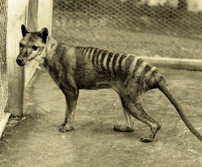

The Tasmanian Tiger, also known as the Thylacine, was a native, meat-eating, animal to Tasmania. Fossils and rock paintings show that they lived in areas of Australia and New Guinea. A reason that they are extinct could be because of a bounty that was put on their heads. Van Diemens Land Company introduced the bounties because the Tasmanian Tigers were eating their sheep. They were also sought by zoos around the world. They were declared extinct in 1986.
